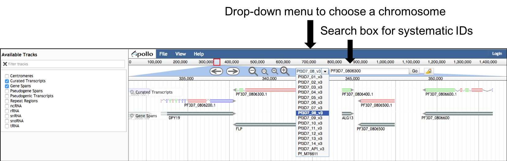
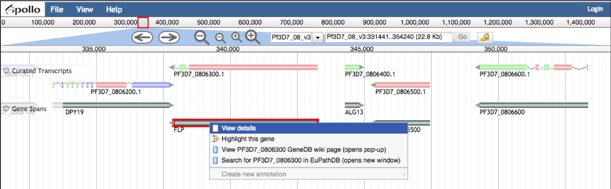
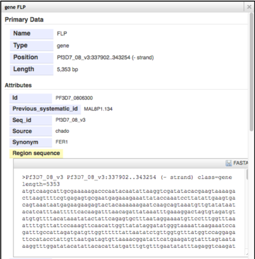

Frequently Asked Questions
What happened to the previous version of the GeneDB website?
The old GeneDB website was replaced in January 2019 to facilitate integration with the Apollo annotation tool. You can now view gene structures and functional annotations in Apollo, which is based on JBrowse. The genomes in Apollo are updated on a weekly basis. In addition to that, we are providing a new GeneDB website that is based on information publicly available on Wikidata.
How do I cite GeneDB?
Please cite the current GeneDB publication.
How can I search Apollo and access the functional annotations for my gene of interest?
You can either choose a whole chromosome in Apollo and scroll along the chromosome, or you can type a Gene ID or gene name (e.g. MDR1) in the search box.
You can right click on a gene or transcript to view the associated functional annotations. If you right click on a gene, you will also find links to the GeneDB Wikidata pages and EuPathDB. Wikidata pages are currently available for Plasmodium species and the other organisms in GeneDB will be added in the following months.
I've found my favourite protein, how do I now download the sequence?
Go to your gene of interest, right click on the gene and view details. From here you can download a FASTA file.
Where can I view annotation statistics?
How can I edit gene models in Apollo?
Editing gene models in the GeneDB Apollo instance is still in the testing phase and currently only available for the organisms Aspergillus fumigatus, Aspergillus niger, Trypanosoma brucei, and Toxoplasma gondii. You can sign up for testing the gene model editing via this form. Note that there is no mechanism yet in place for integrating edits back into GeneDB.